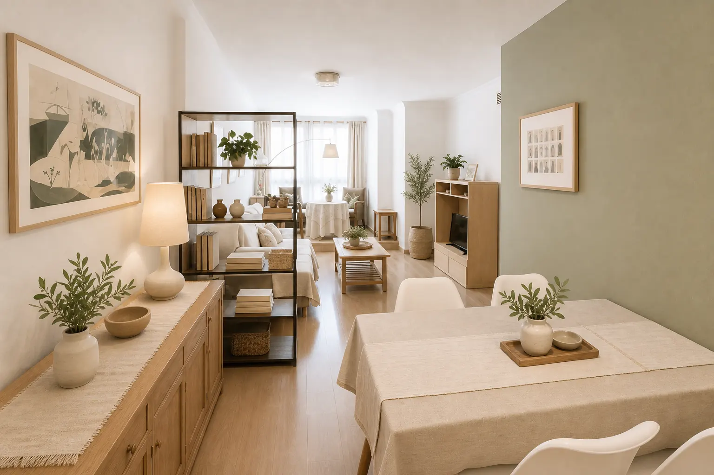

Málaga · Andalucía
Propiedades
con carácter.
Una selección personal de residencias y oportunidades de inversión en las direcciones más deseadas de Málaga.
Descubrir la selección↓Selección 202601 — 02
Propiedades disponibles
Elija una propiedad para descubrirla.
Cada residencia cuenta con su propio dossier digital, galería y detalles para una primera visita a su ritmo.
Jaime Sureda
El lugar correcto merece una presentación a su altura.
Una aproximación personal a la compraventa inmobiliaria: menos propiedades, mejor seleccionadas y presentadas con la atención que exige cada dirección.
Información clara, visitas privadas y acompañamiento directo para compradores y propietarios en Málaga.
Hablar con Jaime→Contacto directo